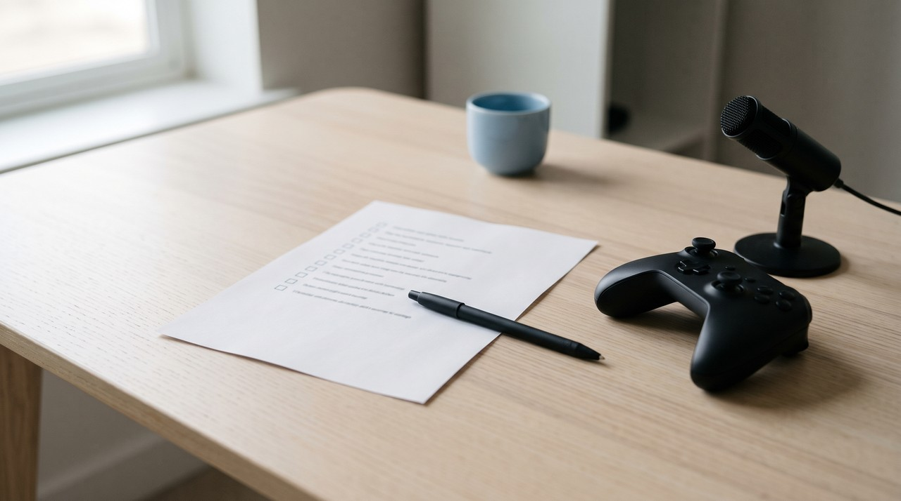
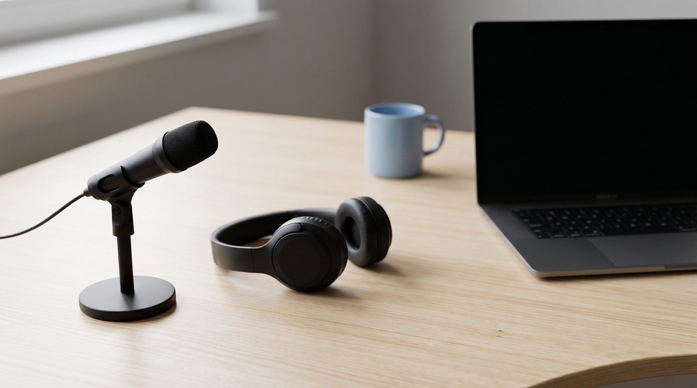

GTA 6 YouTube upload checklist: 8 things to check before you post your first video

When you have a GTA 6 video ready to upload, check eight things before you publish it. Make sure the footage is from your own copy recorded on or after 19 November 2026, it does not show the ending or a string of cutscenes, and it is not an in-game TV show posted alone. Also check that nothing graphic appears in the first 7 seconds or in the thumbnail, your own commentary runs through the video, any AI voice is marked the right way, and no link in the description goes to a fake download.
| # | Check before you press Publish | Whose rule | What happens if you skip it |
|---|---|---|---|
| 1 | The footage is from your own copy, recorded on or after 19 November 2026 | Rockstar | Leaked or pre-release footage is taken down |
| 2 | The video is not the ending, and not cutscenes cut together | Rockstar | A take-down notice |
| 3 | It is not an in-game TV show or comedy act on its own | Rockstar | Flagged for removal |
| 4 | Nothing graphic happens in the first 7 seconds | YouTube | No ad revenue for the video |
| 5 | The thumbnail shows no graphic game violence | YouTube | Limited ad revenue |
| 6 | Your own commentary runs through the video and explains what is on screen | YouTube | Plain gameplay may not be accepted for ads |
| 7 | An AI voice is marked the right way in the upload form | YouTube | A forced label, removal or a Partner Program suspension |
| 8 | No link in your description goes to a PC, mobile or free download | Common sense | Your viewers get malware, and they got it from you |
Written by Inam, an engineer in Pakistan who narrates his own videos. My other work is on designesh.com. VoiceClone, the app in the last section, is mine and I sell it, so weigh that section with that in mind. Last updated 19 November 2026.
GTA 6 came out on 19 November 2026 for PlayStation 5 and Xbox Series X|S, and if you just recorded your first hours of play, you want that video on YouTube right away. Before you hit upload, keep in mind that Rockstar and YouTube both have rules for that video, and each company can hurt your upload in a different way. Rockstar can have the video taken down, and YouTube can leave it up while switching the ads off.
So before you press Publish, run the 8 checks in the table above. It takes about five minutes, and checks 1, 2 and 3 are the ones Rockstar's own page says end in a take-down notice. I will walk through each check below and show you the exact rule behind it, so you understand why each rule exists.
I want to share a few plain facts before the details. This is my own reading of the published rules, so please do not treat it as legal or financial advice. GTA 6 belongs to Take-Two and Rockstar, this site is not connected to them, and Rockstar can remove footage whenever it wants. Most people earn very little from game videos or clipping at the start, and if you cut clips from a streamer's video, getting the streamer's permission still does not make those clips eligible for YouTube ads.
Which GTA 6 videos does Rockstar take down?
Rockstar keeps one general policy page that covers every game it makes, called the policy on posting copyrighted Rockstar Games material. I checked that page again on launch day and it still shows a last updated date of January 10, 2025, so there is no separate GTA 6 version of the rules. The page states that Rockstar is happy for fans to upload footage of their own gameplay, and then it lists the specific videos that get a take-down notice.
Here is that list in plain words, along with the check number each item matches:
- Leaked or pre-release footage (check 1). Rockstar takes down any footage from a copy of the game that leaked before the official release date, and the policy says this applies no matter how someone got the game, including early unboxing videos. Record your own play from your own copy on or after 19 November 2026, and avoid reusing clips that circulated before that date.
- Spoilers (check 2). The policy specifically names videos that show the ending of the game, an edited combination of cutscenes or plot dialogue, and any other major story reveal.
- In-game entertainment on its own (check 3). The TV shows and comedy performances inside the game are written and performed pieces that Rockstar wants players to experience while playing. If you upload a video that is only one of those shows by itself, Rockstar flags it for removal.
- Cheating and unauthorized mods. Videos that promote cheats, exploits or mod menus for the online game are also on the removal list.
People often misunderstand the cutscene rule, so let me give you a clear example. A two hour playthrough where story scenes play naturally as you reach them is fine, and a narrated Let's Play is fine too, because the policy allows cutscenes inside a larger playthrough. On the other hand, a 6 minute video that shows only one cutscene with the scene name in the title is what Rockstar calls an isolated video of the game's cinematics, and those videos get removed.
If your video is only a cutscene, only the ending, or only an in-game show, do not upload it.
I also want to add one honest note about money. Rockstar's policy states that it does not object to non-commercial use, which it defines as "you don't make money through the game footage you post". Many channels run ads on GTA videos anyway, even though Rockstar's page does not grant permission for that, and I already covered that issue in GTA 6 ways to make money from Pakistan so I will not repeat it here.
Does it matter what happens in the first seconds of a GTA 6 video?
Yes, and this check surprises a lot of creators because it has nothing to do with copyright. YouTube checks how a video opens when deciding if it can carry ads. In September 2026 YouTube updated its advertiser-friendly guidelines to state that graphic gaming content in the first eight to fifteen seconds can earn ad revenue, while graphic gaming content in the first seven seconds remains ineligible.
In practice, that gives you a clear rule when editing a game like this one. If your video opens straight into a shootout, YouTube can switch ads off for the entire upload, even if the remaining 40 minutes just show you driving around and talking. If that same shootout starts at second 10 instead, the video stays eligible for ads, and the guidelines page defines graphic content as brutal killings or severe injuries that focus on bodily fluids and parts.
Start every GTA 6 video with 7 calm seconds: you talking, the car, the city, a menu. Put the action after that (check 4).
Thumbnails have their own line on that guidelines page, and the rule is stricter than the one for video playback. YouTube puts graphic game violence in a thumbnail under limited ad earnings, regardless of where that violence happens inside the video. Because YouTube applies these rules to your title, description and tags too, a clean video paired with a shocking thumbnail still loses ad eligibility, so use your own face, a car, a skyline or big plain words instead (check 5).
Can a GTA 6 video earn ad money on YouTube?
It can, but YouTube's rule on gameplay monetization is tighter than many people assume. The video game and software content page explains that game content can only be monetized based on the commercial use rights in the publisher's license, and without those rights your use of the game must be minimal. A second YouTube page on what kind of content you can monetize gives the exact exception: game use must stay minimal unless your commentary adds instructional or educational value and ties directly to the action on screen.
You can think of that rule as separating two different styles of video. Forty minutes of silent driving simply shows gameplay for an extended period, and YouTube notes that publishers may not grant commercial rights for that kind of upload. If you take that same forty minutes and explain what you are trying to do, what went wrong and what the viewer should do differently, your commentary is tied to the action, and that is also what YouTube's reused content rule asks for: your own narrative over footage you do not fully own.
So talk through the whole video, and talk about what is on screen (check 6). Speaking only in the intro does not meet the rule, and playing music over silent gameplay does not work either. If recording a clean voice track is hard for you because of noise at home or late night editing, I shared a simple setup for that in GTA 6 commentary in your own voice.
Nobody can promise that YouTube will approve a video for ads, and that includes me. Following these checks simply removes the clear policy reasons that get ads turned off.

Do you need to mark an AI voice when you upload a GTA 6 video?
When you upload a video in YouTube Studio, the form asks if your video contains altered or synthetic content, and many creators using an AI voice tick Yes just to be safe. YouTube's page on disclosing AI content actually lists items you do not need to disclose, and two lines on that list apply here: cloning your own voice for voice overs or dubs, and gameplay footage from video games.
That means the right box to tick depends on whose voice you used:
- Your own voice, cloned, reading your own script over your own gameplay: answer No. Both your cloned voice and the game footage sit on YouTube's list of things you do not have to disclose.
- A real person's voice saying something that person never said: you DEFINITELY HAVE TO MARK IT YES. YouTube requires disclosure whenever content makes a real person look or sound like they said or did something they never did.
- A GTA 6 character's voice, cloned: do not make it at all. Adding a disclosure label does not make it safe, because the voice belongs to a real performer and the game audio belongs to Take-Two, and I covered both risks in why you should not clone a GTA 6 character's voice.
That covers check 7, and it takes ten seconds once you know which of those three cases fits your video. If you want the broader rules for narrated channels, read your own AI voice for YouTube.
Which GTA 6 downloads and offers are scams?
Check 8 looks at your description box and pinned comment, because scammers love dropping fake download links under real gameplay videos. Keep one basic fact in mind: on launch day, Rockstar's own GTA 6 page lists only PlayStation 5 and Xbox Series X|S, with no PC version, no phone version and no free version.
Security researchers have already found what those fake download sites actually deliver:
- Fake installers. Malwarebytes found sites copying Rockstar's promotion that offer a file named gta6_installer.exe. At 1.1 MB, the file is far too small to be a real game, and it acts as an information stealer that grabs saved browser passwords and active login sessions.
- Fake "leaked" builds. Netcraft tracked 121 newly registered domains using the name of the leak group, and one site served a file called GTAVI.exe that 34 of 68 security engines flagged, mostly as a trojan. That same report also documented pages pushing a fake "GTA 6 APK" for Android.
- Paid early access. Malwarebytes also reported sites asking visitors to pay a few hundred dollars in cryptocurrency for early access that never existed.
Do not put any GTA 6 download link in your description, and delete comments that do. Creators also face a second version of this trap when people sell packs of GTA 6 clips claiming anyone can reuse them freely. Those packs are never safe to trust, because Rockstar still owns the footage no matter who recorded it, and downloading files from strangers is a bad risk for a few seconds of video.
Where does VoiceClone fit?
It only helps with checks 6 and 7, and only if recording narration is what slows down your uploads. I built VoiceClone because I narrate my own videos and did not want to pay a monthly subscription just to use my own voice. The app runs the GPT-SoVITS engine completely offline on a Windows 10 or 11 computer so your voice sample never leaves your machine. You train it on your voice, type your commentary script and let it read the lines in your voice, and while a GPU makes it run faster, it works on a CPU too.
I want to be upfront about what VoiceClone cannot do. It is built mainly for English, so if you record commentary in Urdu or Punjabi, a real microphone is still the right choice. It does not record gameplay, edit video or design thumbnails, and you must only use it with your own voice or the voice of someone who gave you clear permission.
The free tier lets you clone and fully train one voice one time, and then gives you 3 generations so you can hear how it sounds. If it fits your workflow, the $49 one time license has no recurring subscription, and you can grab the free version on the download page.
FAQ
Can I upload GTA 6 gameplay to YouTube?
Yes, you can. Rockstar's policy states that it is happy for fans to upload footage of their own gameplay, while listing the specific things that get taken down: leaked or pre-release footage, the ending, cutscenes edited together, and in-game TV shows posted by themselves.
Can I show GTA 6 cutscenes in my video?
Yes, as long as they appear inside a larger playthrough or a narrated Let's Play. Rockstar's policy says isolated videos of the game's cinematics will be removed, so avoid uploading a single cutscene on its own.
Will YouTube demonetize GTA 6 videos for violence?
Not for standard gameplay. YouTube's guidelines state that graphic gaming content in the first 7 seconds makes a video ineligible for ad revenue, and graphic game violence in a thumbnail leads to limited ads, so keep both your opening seconds and your thumbnail calm.
Do I have to label my cloned voice as AI on a GTA 6 video?
No, not when you are cloning your own voice. YouTube lists cloning your own voice for voice overs or dubs under content you do not have to disclose, though you must still disclose a real person's voice saying something they never actually said.
Sources: opened and read on 19 November 2026. Rockstar's Grand Theft Auto VI page and its policy on posting copyrighted Rockstar Games material (last updated January 10, 2025); YouTube Help pages on the advertiser-friendly content guidelines, the advertiser-friendly guideline updates (September 2026), video game and software content, what kind of content you can monetize, channel monetization policies and disclosing altered or synthetic content; Malwarebytes reports of 23 June and 24 August 2026; Netcraft's report on GTA VI themed scam domains. This is my reading and not legal advice.
Hear your own voice come back.
The free Windows app clones and fully trains one voice, yours, on your own PC. No account, no upload, and the download starts right away.